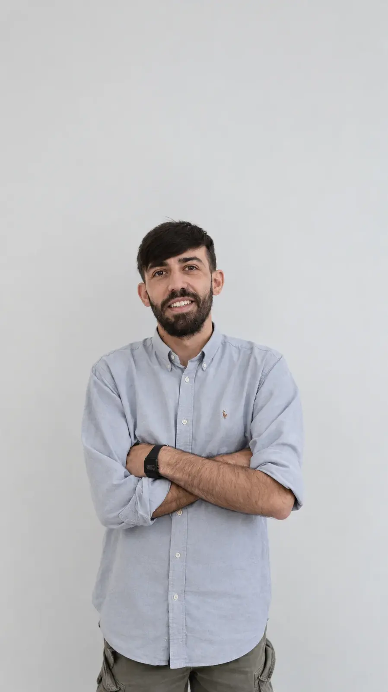

Alessandro
Temi
Product & Computational Designer
I design with code and prove it on a printer.
Product and computational designer based in Rome. After a degree in Industrial Design at Sapienza, I spent five years working alongside 3D printers: first as Technical Manager of the Fab Labs of Lazio, then at 3DZ, supporting companies that print in production. The Master at SOS School of Sustainability, with Mario Cucinella Architects, carried that method from objects to buildings. These are the projects that shaped it.

- 5 years
- Fab Labs, industry and teaching
- 110/110
- cum laude, Industrial Design, Sapienza
- Master
- SOS School of Sustainability · Mario Cucinella Architects
Selected work
Five architecture projects and three products, each with a live model of the logic behind it.
Five years around printers.
Most of what I know comes from working at the machines, alongside the people who depend on them.
Regional Fab Labs in Rome, Colleferro, Ferentino and Zagarolo, serving makers, startups and schools, from a file to a working part.
Support for 3D Systems, Markforged, Formlabs, Nexa3D and Artec 3D customers, then MJP jewellery production across Central and Southern Italy.
FDM printing for VFX props at ITS Academy Roberto Rossellini, Fusion 360 for additive manufacturing at Chirale, modelling and printing at Fab Lab Lazio.
Master in Sustainable Architecture and Design, with Mario Cucinella Architects. Before that, a B.A. in Industrial Design at Sapienza, cum laude, 2020.
let's talk.
I’m looking for a role or a collaboration in computational design, additive manufacturing or construction innovation, with a studio, a research team or a manufacturer. I also teach and consult on 3D printing and digital fabrication.